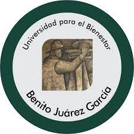

La Universidad para el Bienestar Benito Juárez García (UBBJ) ofrece las licenciaturas de Contabilidad y Administración Pública, Administración Municipal y Políticas Públicas, Derecho, y Derecho y Administración Pública en el área económico-administrativa. Estas licenciaturas son totalmente gratuitas y con beca bimestral, según la convocatoria 2025. En detalle: Licenciatura en Contabilidad y Administración Pública: Esta carrera prepara a profesionales en el manejo de la contabilidad y la administración, con énfasis en el sector público. Licenciatura en Administración Municipal y Políticas Públicas: Esta carrera se enfoca en la gestión de gobiernos locales y la formulación de políticas públicas. Licenciatura en Derecho: Esta carrera prepara a profesionales del derecho, con especialización en la administración y la gestión de políticas públicas. Licenciatura en Derecho y Administración Pública: Esta carrera combina el estudio del derecho con la administración, con el objetivo de formar profesionales capaces de actuar en la gestión gubernamental. La UBBJ ofrece estas carreras sin examen de admisión y con beca bimestral de 5 mil 800 pesos, según la convocatoria 2025. El registro en línea para la convocatoria 2025 está disponible del 10 al 30 de junio de 2025 en la página oficial de la UBBJ, según infobae. Requisitos para el registro: Certificado de estudios de bachillerato, Acta de nacimiento, CURP, Identificación oficial, Comprobante de domicilio.
A continuación hay una imagen editable:
